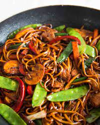

Put the noodles in a bowl and pour over boiling water to cover. Leave for 4 mins, then drain and rinse under running cold water until cold. Drain well, then snip into short lengths with scissors.
Rinse the tofu in cold water, then cut into small chunks. Pat dry with kitchen paper. Heat 1 tbsp of the oil in a wok or large frying pan, add the tofu, then stir-fry for 2-3 mins, stirring until lightly browned. Drain on kitchen paper.
Add the remaining oil to the wok and heat up. Add the spring onions, ginger, pepper and mangetout, then stir-fry for 1 min. Add the noodles and beansprouts, then stir to mix. Blend together the curry paste, soy, chilli sauce and 1 tbsp water, then add to the wok, stirring until everything is well coated in the sauce. Serve sprinkled with coriander, with lime wedges for squeezing over.
